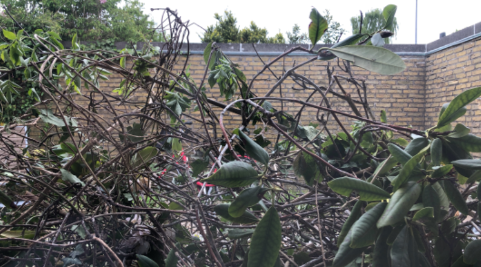
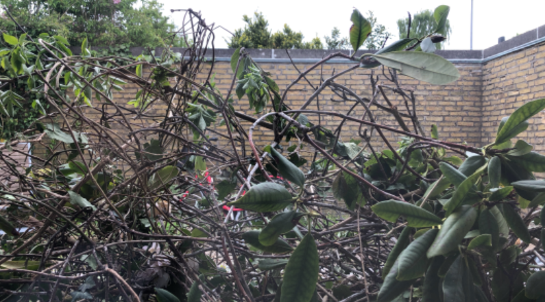

❱
Funded by the European Space Agency (ESA)
2023-2024
Developing Avionics and on-board GNC algorithms for safe atmospheric flight, descent and landing of rockets.
Consortium partners: Deimos Enginheria (Project Leader), Aalborg University, Orbex.
Funded by the Innovation Fund Denmark
2020-2021
Global VDES-SAT constellation network to provide maritime safety and navigational services. My main responsibilities were developing a simulation environment of the satellite constellation and communication protocols for system verification, LEOP and providing advice in relation to safety protocols (collision probability and avoidance maneuvers).
Consortium partners: Sternula (Project Leader), Aalborg University, Space Inventors S/A, GateHouse, Satlab and Danmarks Meteorologiske Institute.
Funded by the Innovation Fund Denmark
2019-2020
Design, construction and testing of an automated flight termination system for big drones (>7kg), including the implementation of neural-networks (for landable ground images classification and structural vibration monitoring); and the formulation of a decision function to terminate the flight.
Related papers:
Gomez, A. R. & la Cour-Harbo, A., “Emergency Landing Decision Method for Unmanned Aircraft”, International Conference on Unmanned Aircraft Systems (ICUAS), 2021.
Bektash, O. M., Pedersen, J. N., Gomez, A. R. & la Cour-Harbo, A., “Automated Emergency Landing System for Drones: SafeEYE Project”, International Conference on Unmanned Aircraft Systems (ICUAS), 2020.
Developed in collaboration with:
This section is currently under construction
H-INFINITY, CONTROL BARRIER FUNCTIONS, SUCCESSIVE CONVEXIFICATION
LARGE DEVIATIONS THEORY, REACH-AVOID PROBLEM
Satellite collisions are rare events, thus characterized by very low probabilities of occurrence, yet they stand as a significant concern due to their potential catastrophic consequences. The impact of a collision can be severe, leading to the generation of space debris that poses risk to operational spacecraft and human space activities.
The analysis of rare events in dynamical systems can be challenging, since standard Monte Carlo methods are often not suitable (it would require a ridiculously large amount of simulations to obtain any meaningful statistical information). Such analysis requires formulations that involve rare event tailored methods.
In particular, we borrow rigorous mathematical tools from the theory of large deviations to study the rare, but extreme, events of spacecraft collisions in orbit. Large deviations allows us to describe the limiting behaviour of the satellites with respect to some small parameter by modeling the uncertain motion of satellites using stochastic differential equations with small diffusion. Then, we extend this description so as to include the effects of having probabilistic initial conditions—a typical assumption in spacecrafts. This description enables the computation of the most likely fluctuations leading to an orbital collision, yielding the most likely samplepath realizing the rare event: the maximum likelihood path (or instanton) for deterministic initial conditions, and the maximum a posteriori path when the departing state is random.
Related papers:
Gomez, A. R. & Bujorianu, M. L., Wisniewski, R. “Large Deviations in Hamiltonian Systems with Probabilistic Initial Conditions”, Automatica, 2024 (Submitted).
Gomez, A. R. & Wisniewski, R., “Stochastic Safety in Space Conjunctions”, IEEE Conference on Decision and Control (CDC), 2022.
POINTING ACQUISITION, DESCENTRALIZED GUIDANCE, EXTREMUM SEEKING, NASH EQUILIBRIUM
The Laser Interferometer Space Antenna (LISA) is an ambitious space mission led by NASA and ESA with the goal of detecting and understanding gravitational waves (GWs). This mission involves a trio of spacecraft positioned in an equilateral triangle formation, each linked by frequency-stabilized lasers. These spacecraft work together to detect gravitational waves by observing the fluctuations in the lasers' frequency, which are affected by the ripples in space-time that alter the distances between internal proof masses located in each spacecraft.
We designed a guidance algorithm that could potentially be employed for the Pointing Acquisition and Tracking (PAT) phase, namely, the challenge of aligning the spacecraft's internal interferometers with incoming lasers from the other two spacecraft. This alignment must meet exceptionally stringent accuracy requirements to enable scientific observations, with misalignments not exceeding 1 microrad. To that end, every spacecraft is equipped with two identical optical assemblies (OAs) as payload, each of which contain, among others, the proof mass, a telescope, a laser source and laser interferometer detectors.
The guidance system has been developed to manage this alignment process by solving a cooperative game problem with a new algorithm designed to provide precise tracking references to each of the spacecrafts' controller for a fast, simultaneous and accurate alignment of the laser beams into the interferometer detectors.
Related papers:
Gomez, A. R.* & Al Ahdab, M.*, “Momentum-Based Learning of Nash Equilibria for LISA Pointing Acquisition”, IFAC World Congress, 2023.

NEURAL-NETWORKS, MONITORING, DECISION-MAKING
INDUSTRIAL MANIPULATORS, PARALLEL PLATFORMS, INVERSE KINEMATICS
I worked at the Computational Robotics Laboratory from the Institute of Robotics and industrial Informatics modelling, constructing and controlling Gough-Stewart-type parallel platforms (in particular 6-RUS platforms) under the supervision of Professor Federico Thomas. The parallel platforms consisted of 6 Dynamixel actuators, an Arduino UNO electronic board and an inertia measurement unit MPU-6050. An external camera was also employed to collect images of the surface of the platform. Despite the available 6 degrees of freedom, the main goal was to balance the orientation of the platform in order to perform different tasks, e.g. stabilize a rolling/bouncing ball or counteract the motion of the base so as to maintain the platform parallel to the horizon.
I also got the chance to play around with serial manipulators during my Master's in Control and Automation. In particular, developing simulations (like the one shown on the right) and implementing the inverse kinematics of an Universal Robot 5 with the goal of manipulating the end-effector wirelessly through a tablet.


OCCLUSIONS, FOCUS RECONSTRUCTION
Reconstructing occluded objects from structured array of images using focus reconstruction. Inspired by paper from Mark Levoy et al. This type of technology is used in many sectors, including astronomical observatories, UAVs for search-and-rescue and photographic cameras. The application shown on the right demonstrates how an a structured array of images use the parallax effect to its advantage to reconstruct objects (a chair on the left, and a red bike in the center of the image) behind occlusions. Other applications include autonomous re-focusing of images and 3d object reconstruction.
 

The symbol (*) indicates equal contribution
Gomez, A. R., Bujorianu, M. L. & Wisniewski, R., “Large Deviations in Hamiltonian Systems with Probabilistic Initial Conditions (Preprint)”, Automatica, 2024. (Submitted)
Gomez, A. R., Nebelecky, K. C. & Crassidis, J., “Maneuver Determination in Near-Earth and Cislunar Space without Time/Magnitude Knowledge”, AIAA Journal of Guidance, Control and Dynamics, 2023. (Submitted)
Gomez, A. R.* & Al Ahdab, M.*, “Momentum-Based Learning of Nash Equilibria for LISA Pointing Acquisition (Preprint)”, IFAC World Congress, 2023.
Gomez, A. R. & Wisniewski, R., “Stochastic Safety in Space Conjunctions”, IEEE Conference on Decision and Control (CDC), 2022.
Gomez, A. R. & la Cour-Harbo, A., “Emergency Landing Decision Method for Unmanned Aircraft”, International Conference on Unmanned Aircraft Systems (ICUAS), 2021.
Bektash, O. M., Pedersen, J. N., Gomez, A. R. & la Cour-Harbo, A., “Automated Emergency Landing System for Drones: SafeEYE Project”, International Conference on Unmanned Aircraft Systems (ICUAS), 2020.